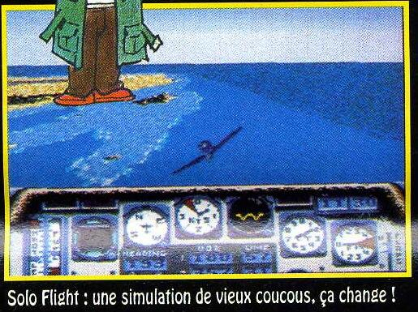
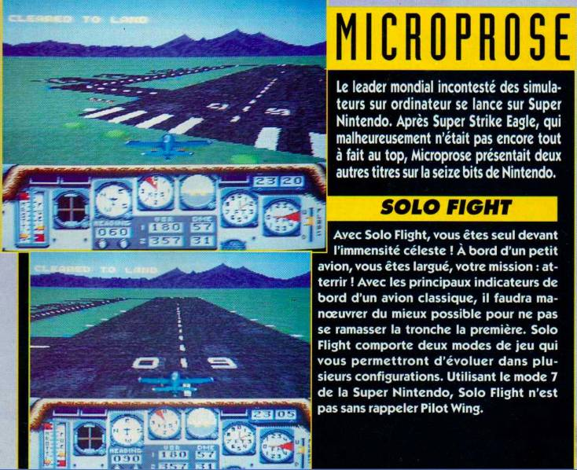

SNES - Solo Flight
 :::. Por Gigacom
:::. Por Gigacom
Alguns jogos do Mega Drive e Super Nintendo impressionam por causa da complexidade, e premissa de emulador. Exemplo é o Test Drive, game originalmente lançado para PC e portado com maestria para esses dois consoles de 16 bits. Outos jogos, que vieram em abudância para o Mega, são aqueles simuladores de aviões caça como o F-22 e o Mig 29. Solo Flight seguiria a mesma linha, porém o ambiente do jogo não seria nenhuma guerra, conflito ou disputa, e sim viagens simples de entrega de pacotes de correio.
O game estava em desenvolvimento pela Micropose (a mesma responsavel por Test Drive, Mig 29 e outros),e o objetivo da empresa era utilizar os recursos do tão famoso e pouco usado Mode 7 para construir o ambiente do simulador. Para quem ainda não conhece, o Mode 7 era uma função especial do processador do Super Nintendo, e que possibilitava a criação de cenários que imitam um ambiente 3D. Alguns jogos que usam e abusam dessa função são F-Zero, Mario Kart e Pilotwings.
A razão do cancelamento é desconhecida, mas creio que foi mais ou menos assim a trajetoria desse game:
1º - Alguém aparece com a idéia, defende ela, consegue apoio na empresa, e consequentemente a permissão para o desenvolvimento.
2º - Esse mesmo alguém se mata junto com uma equipe de 10 programadores para fazer o jogo, só que a coisa não ficou tão boa quanto ele queria... tipo, nas conversas com os amigos enquanto matavam uma pizza, o cara insistia em fazer uma visão muito louca do game, dando ares de que seria algo alucinante e empolgante entregar pacotes de correio através de um mundo virtual.
3º - Quando a diretoria quiz ver a quantas andava o game, o sujeito apresentou a coisa para todo mundo e aí a ficha caiu de vez, e viram que apesar da programação do jogo ser competente, a idéia não era assim tão emocionante quanto deveria...
Apesar de tudo, o
proposito do game era ser um simulador, e um review do que foi a
versão de Solo Flight em 1983 (é, esqueci de comentar que
o jogo é um relançamento ), tá certo que em 83 um simulador do que quer que fosse provocava um...
), tá certo que em 83 um simulador do que quer que fosse provocava um...
Oooooooooooooh!
em todo mundo, e o
tal joguinho obteve bastante fama só por causa disso. Mas nos
anos 90, onde os jogos de video games estavam bem avançados, e o
tcham da coisa era ditada por games realmente divertidos e cheios de
ação, a idéia de virar carteiro aéreo
passou a não ser tão estimulante assim . Confiram as imagens abaixo para terem uma idéia de como seria o jogo:
. Confiram as imagens abaixo para terem uma idéia de como seria o jogo:

Esse é um pequeno bonus para quem fala francês. Nota: o boneco cortado
ao meio não faz parte do jogo.

E esse é um grande bonus... quem disse que as aulinhas de francês não fariam falta um dia?
Acesse o Trombone e comente sobre essa matéria!


{kind=link}

Eeeepa Giga, explica esse negocio direito! Uai!? Explicar o quê? É isso mesmo criatura! Saiu na Ação Games nº 14 que o Nintendão ia receber cartuchos do Nintendinho
O Mega Drive é lindo, tem um processador incrivel, o controle dele é maravilhoso mas quando o negocio é exibir cores na tela, aí ele não é tão bom, e apanha feio da concorrência. Mas é possível aumentar a quantidade de cores exibidas pelo Mega na tela, e tudo via software, sem precisar usar chip ou o que quer seja a mais!